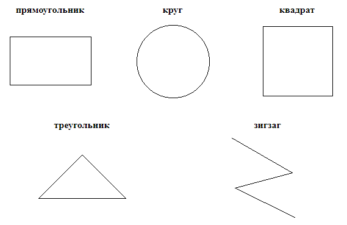

Перед Вами геометрические фигуры:

Если вашей основной фигурой оказался Квадрат, то вы - неутомимый труженик. Трудолюбие, усердие, потребность доводить начатое дело до конца, упорство, позволяющее добиваться завершения работы, - вот основные качества истинных Квадратов. Выносливость, терпение и методичность обычно делают Квадрата высококлассным специалистом в своей области. Этому способствует и неутолимая потребность в информации.
Эта форма символизирует лидерство, и многие Треугольники ощущают в этом свое предназначение. Самая характерная особенность истинного Треугольника - способность концентрироваться на главной цели. Они - энергичные, сильные личности. В тесте Люшера они часто предпочитают зеленый цвет и рисуют елку, когда их просят нарисовать дерево. Треугольники, как и их родственники - Квадраты, относятся к линейным формам и в тенденции также являются "левополушарными" мыслителями, способными глубоко и быстро анализировать ситуации. Однако в противоположность Квадратам, ориентированным на детали, Треугольники сосредоточиваются на главном, на сути проблемы. Их сильная прагматическая ориентация направляет мыслительный анализ и ограничивает его поиском эффективного в данных условиях решения проблемы.
Эта фигура символизирует состояние перехода и изменения. Это временная форма личности, которую могут "носить" остальные четыре сравнительно устойчивые фигуры в определенные периоды жизни. Это - люди, не удовлетворенные тем образом жизни, который они ведут сейчас, и поэтому занятые поисками лучшего положения. Причины "прямоугольного" состояния могут быть самыми различными, но объединяет их одно - значимость изменений для определенного человека. Основным психическим состоянием Прямоугольника является более или менее осознаваемое состояние замешательства, запутанность в проблемах и неопределенности в отношении себя на данный момент времени. Наиболее характерные черты Прямоугольников - непоследовательность и непредсказуемость поступков в течение переходного периода. Они имеют, как правило, низкую самооценку. Стремятся стать лучше в чем-то, ищут новые методы работы, стили жизни.
Круг - это мифологический символ гармонии. Тот, кто уверенно выбирает его, искренне заинтересован прежде всего в хороших межличностных отношениях. Высшая ценность для Круга - люди. Круг - самая доброжелательная из пяти форм. Он чаще всего служит тем "клеем", который скрепляет и рабочий коллектив, и семью, т. е. стабилизирует группу. Круги - лучшие коммуникаторы прежде всего потому, что они лучшие слушатели. Они обладают высокой чувствительностью, развитой эмпатией - способностью сопереживать. Круги великолепно "читают" людей и в одну минуту способны распознать притворщика, обманщика. Круги "болеют" за свой коллектив и популярны среди коллег по работе. Однако они, как правило, слабые менеджеры и руководители в сфере бизнеса. Во-первых, Круги направлены скорее на людей, чем на дело. Пытаясь сохранить мир, они иногда избегают занимать "твердую" позицию и принимать непопулярные решения.
Эта фигура символизирует креативность, творчество, хотя бы потому, что она самая уникальная из пяти фигур и единственная разомкнутая фигура. Если вы твердо выбрали Зигзаг в качестве основной формы, то вы скорее всего истинный "правополушарный" мыслитель, инакомыслящий. Вам, как и вашему ближайшему родственнику - Кругу, только еще в большей степени, свойственна образность, интуитивность, интегративность, мозаичность. Строгая, последовательная дедукция - это не ваш стиль. Мысль Зигзага делает отчаянные прыжки от "а" к "я", поэтому многим "левополушарным" трудно понять Зигзагов. "Правополушарное" мышление не фиксируется на деталях, поэтому оно, упрощая в чем-то картину мира, позволяет строить целостные, гармоничные концепции и образы, видеть красоту. Зигзаги обычно имеют развитое эстетическое чувство.